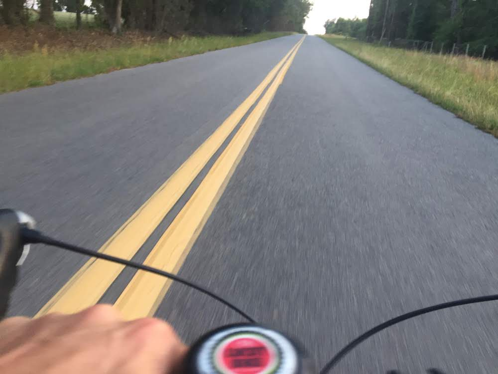

My research explores how new media writing might attend to the ethical tuning of specific spaces and places in a networked posthuman ecology. I'm especially interested in multimodal communication, and specifically how we can use code to improve such experiences and make them more accessible.
Family and Home
I'm married to Dr. Cassie Quigley who works in Pitt's School of Education and we have two children together. My wife runs and my boys ride a lot of bikes, BMX and mountain bikes. We like to travel, often driving across the country in an old converted Sprinter van.
Entertainment
Riding bikes has always been an important part of my life. I guess this started with a movie I watched as a little kid, called Breaking Away. The main character felt trapped by his circumstances growing up in a small working class Indiana town, so he used the bicycle as a means of escape.
The main character took on an Italian persona, studied the language, sang arias, and used his bike to travel the countryside and improve himself physically. Apart from it's utilitarian value, the concept of the bicycle as a vehicle fascinated me - here was this relatively cheap form of transportation that could also serve as a tool for becoming.

I spent a lot of time riding my bike and dreaming. I also raced bikes all across America, and in Netherlands, Belgium, and France. When not writing papers, I still follow cycling online, reading blogs, and watching vlogs. It is my escape. It is this double life I live. That I am not willing to ever give up. There is just too much there.
Community
I gravitate towards other learners and do'ers. My close friends have always been other people who like books and podcasts, who want to learn, do cool things with their lives, and make big days.
Pittsburgh Hurling, 2022 National Champions
I think the real challenge has always seen to extend this doing, learning, this passion for listening, engaging...to other people in our community. That’s our role as learners and educators. To include others in the process of becoming so that our work benefits others, just as others’ work has benefited our own.
School
I taught high school for 8 years which provided me with the most important education I’ve ever received. I worked with students in a number of different settings from international schools in Ireland and Cambodia, and in US inner-city schools and suburbs. In those 8 years I had much learning to do as a human being.
In the years since, I have sought through my teaching to continue that spirit of everyday learning; my students, colleagues, and our discourse have so much to teach me. I'm looking forward to our time together, and excited to see where this class will take us.